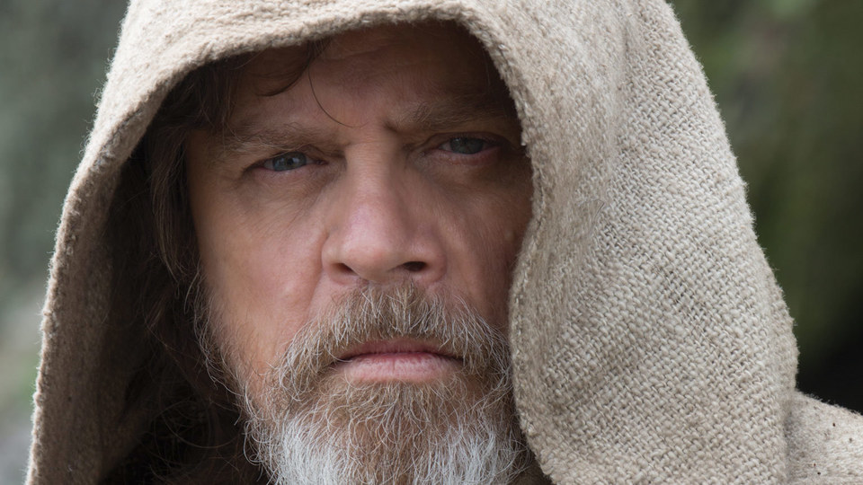

Star Wars
LUKE SKYWALKER

Luke Skywalker adalah seorang budak ladang Tatooine yang bangkit dari permulaan yang rendah untuk menjadi salah satu Jedi yang hebat yang pernah diketahui oleh galaksi. Bersama dengan kawan-kawannya, Princess Leia dan Han Solo, Luke memerangi Empayar jahat, menemui kebenaran keturunannya, dan mengakhiri kezaliman Sith. Satu generasi kemudian, lokasi master Jedi yang terkenal adalah salah satu misteri terbesar galaksi.
DARTH VADER

Setelah Jedi Knight berani, Darth Vader tergoda oleh sisi gelap Pasukan, menjadi Tuan Sith, dan memimpin pembasmian Empayar Perintah Jedi. Beliau kekal dalam perkhidmatan Maharaja - Darth Sidious yang jahat - selama beberapa dekad, menguatkuasakan kehendaknya dan ingin menghancurkan Perikatan Rebel yang baru. Tetapi ada yang baik dalam dirinya ...
YODA

Yoda adalah seorang Jedi Master yang legenda dan lebih kuat daripada yang paling berkaitan dengan Angkatannya. Berukuran kecil tetapi bijak dan kuat, dia melatih Jedi selama lebih 800 tahun, memainkan peranan yang penting dalam Perang Klon, arahan Luke Skywalker, dan membuka jalan menuju keabadian.